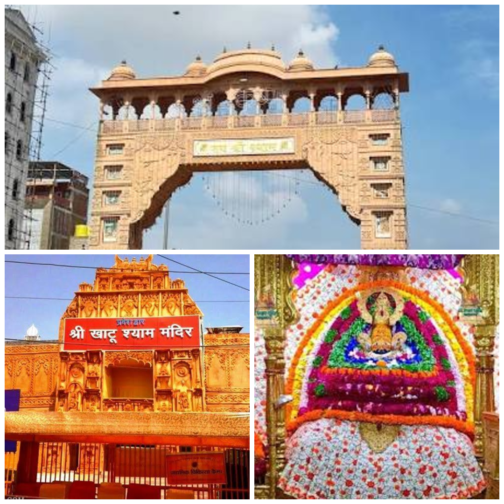
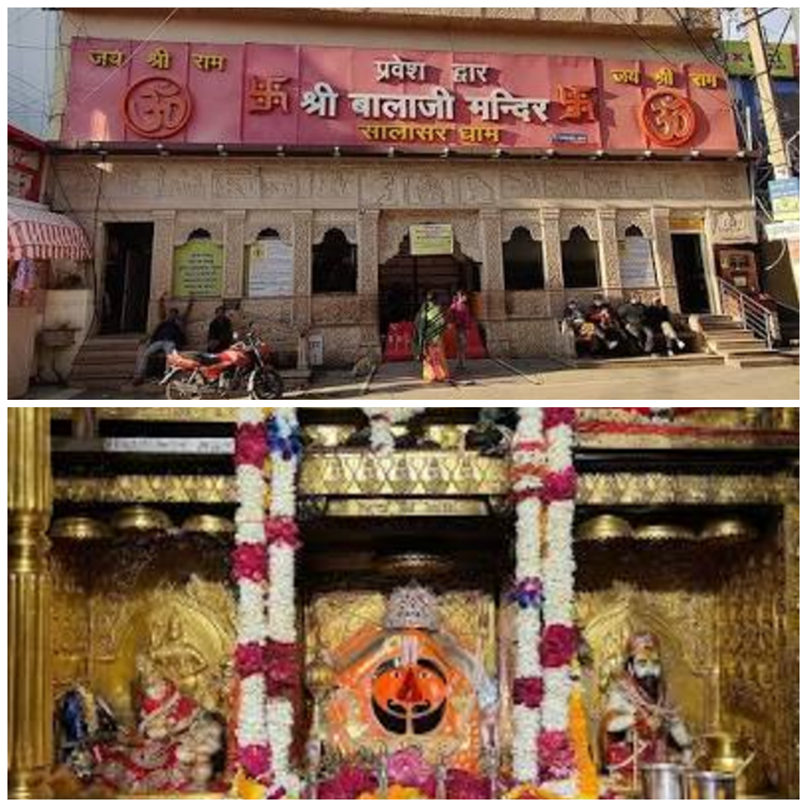
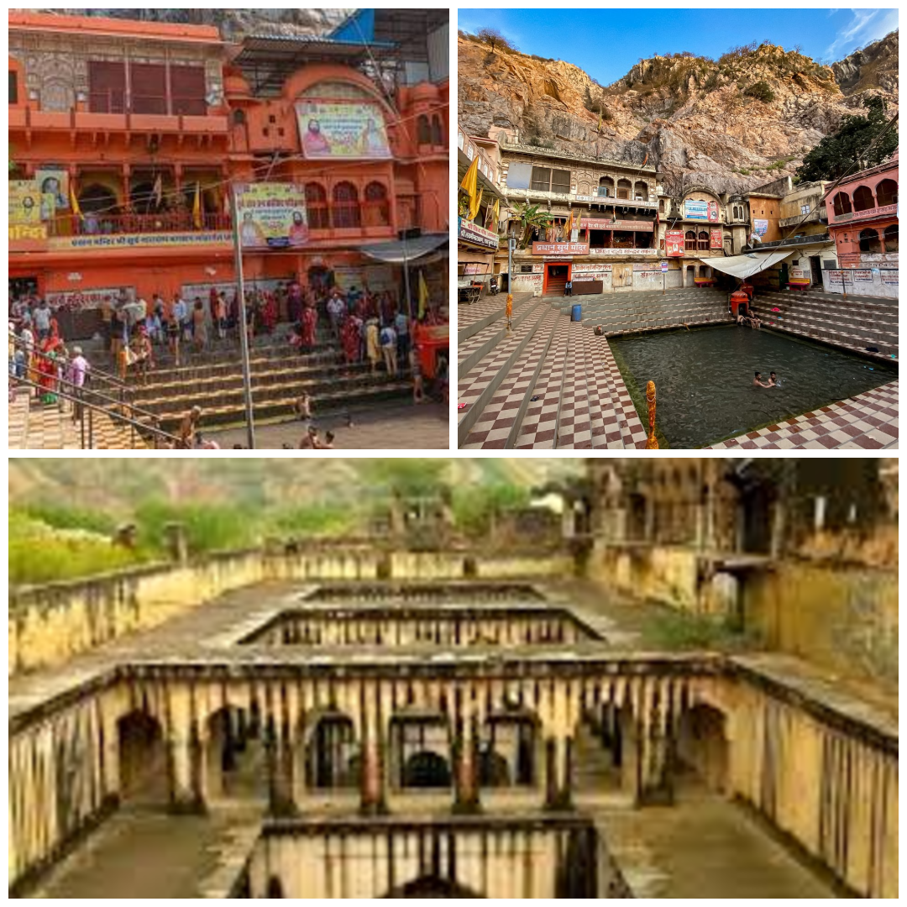
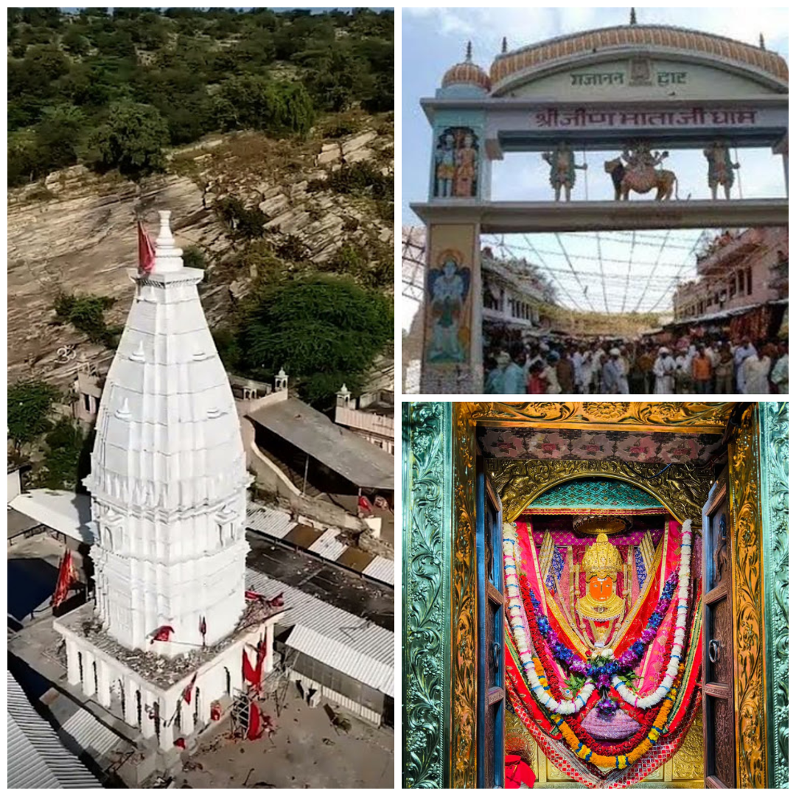
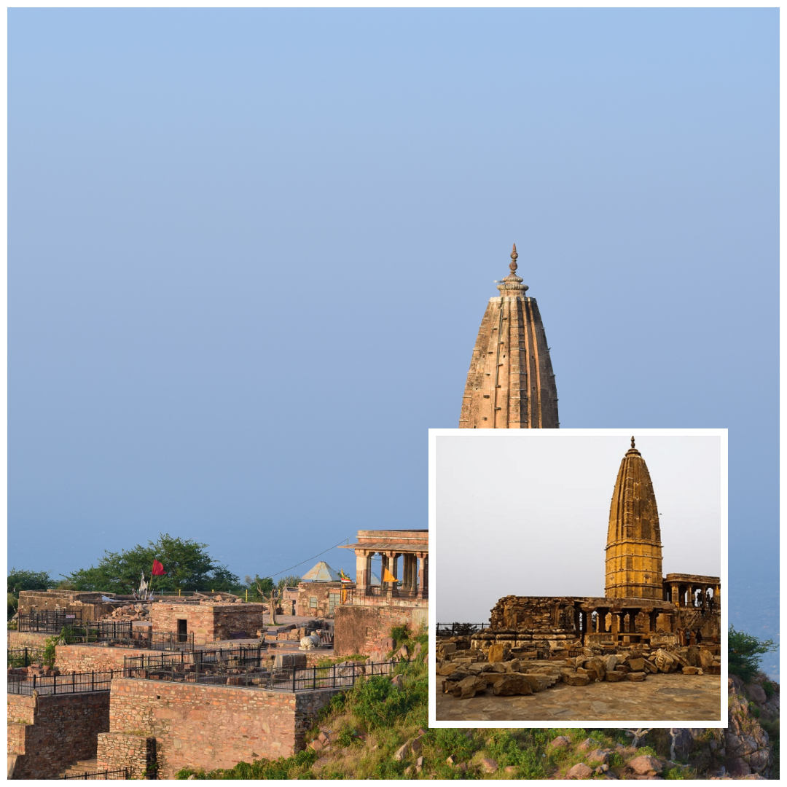

Spiritual Places in Shekhawati
Shekhawati, often known as the "Open-Air Art Gallery of Rajasthan," is dotted with significant spiritual places that blend deep-rooted faith with stunning architecture. Key sites include the highly revered Khatu Shyam Ji Temple, the historic Salasar Hanuman Ji, and the powerful Rani Sati Mandir. The region features the ancient Lohargal Sun Temple, associated with the Mahabharata, and the scenic Harshanath Temple, making it a crucial pilgrimage circuit in the Thar Desert.

Khatu Shyam Ji Temple – The Divine Shrine of Shekhawati
Khatu Shyam Ji Temple is one of the most famous pilgrimage sites in Rajasthan and a major spiritual center in the Shekhawati region.
Location: Khatu village, Sikar district, Rajasthan.
Importance: The temple is dedicated to Barbarik, the grandson of Bhima, who is worshipped as Khatu Shyam and believed to be an incarnation of Lord Krishna.
Special Feature: The temple attracts thousands of devotees every year, especially during the grand Phalgun Mela festival.

Salasar Balaji Temple – Lord Hanuman’s Sacred Abode
Salasar Balaji is one of the most respected temples dedicated to Lord Hanuman and an important pilgrimage destination in Rajasthan.
Location: Salasar town, Churu district, Rajasthan.
Importance: Devotees visit this sacred temple to seek blessings of Lord Hanuman for strength, protection, and fulfillment of wishes.
Special Feature: The idol of Hanuman here is unique because it has a beard and mustache, which is rarely seen in other temples.

Rani Sati Mandir – Symbol of Devotion and Courage
Rani Sati Mandir is one of the most famous temples in Jhunjhunu and an important spiritual landmark of the Shekhawati region.
Location: Jhunjhunu city, Rajasthan.
Importance: The temple is dedicated to Rani Sati (Narayani Devi), who is remembered for her devotion, bravery, and sacrifice.
Special Feature: The temple complex is known for its beautiful marble architecture, paintings, and several smaller temples inside the campus.

Lohargal – Ancient Pilgrimage Site of the Pandavas
Lohargal is an ancient and sacred pilgrimage site located in the Aravalli hills of the Shekhawati region.
Location: Near Udaipurwati in Jhunjhunu district, Rajasthan.
Importance: According to Hindu mythology, the weapons of the Pandavas melted here after the Mahabharata war, giving the place its name “Lohargal.”
Special Feature: The sacred Surya Kund and the 24-kos parikrama route make Lohargal an important religious destination for devotees.

Jeen Mata Mandir – The Historic Shakti Peeth of Rajasthan
Jeen Mata Mandir is a historic temple dedicated to Goddess Durga and one of the most visited spiritual sites in the Shekhawati region.
Location: Near Raiwasa village in Sikar district, Rajasthan.
Importance: The temple is believed to be more than 1000 years old and is dedicated to Jeen Mata, an incarnation of Goddess Durga.
Special Feature: The temple is surrounded by scenic Aravalli hills and attracts thousands of devotees during the Navratri festival.

Harshanath Temple – The Hilltop Shiva Shrine of Shekhawati
Harshanath Temple is an ancient Shiva temple and an important historical and spiritual attraction in the Shekhawati region.
Location: About 14 km from Sikar city in the Aravalli Hills, Rajasthan.
Importance: Built in the 10th century, the temple reflects the rich history and architectural heritage of Rajasthan.
Special Feature: The temple is known for its beautiful stone carvings, Nagara-style architecture, and breathtaking hilltop views.